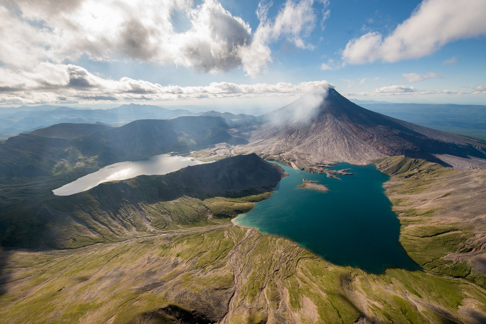
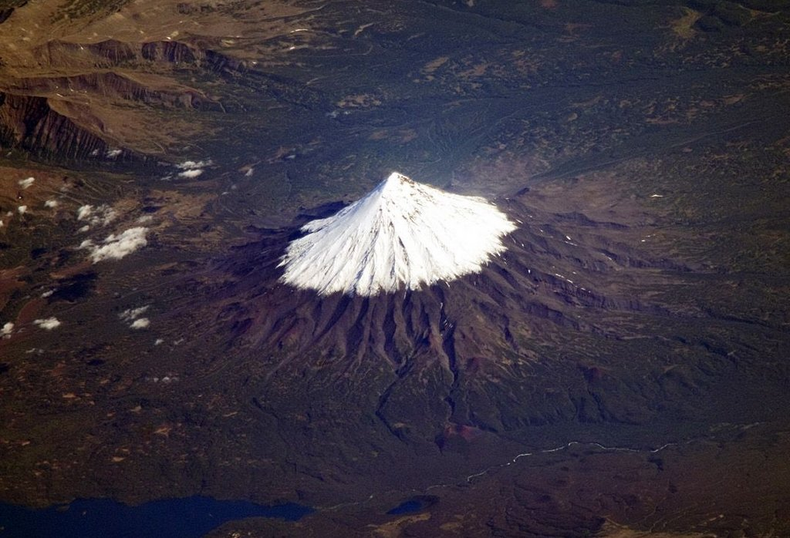
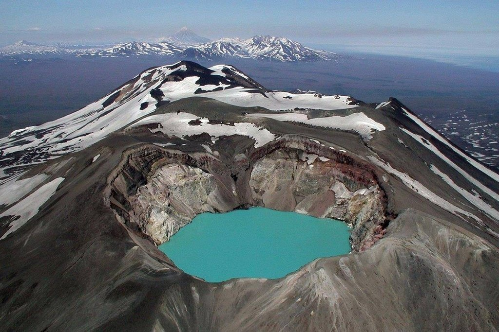

| Даты тура | Стоимость |
|---|---|
| 24.06 - 01.07 | 149 900р |
| 03.07 - 10.07 | |
| 14.07 - 21.07 | |
| 24.07 - 31.07 | |
| 04.08 - 11.08 | |
| 15.08 - 22.08 | |
| 26.08 - 02.09 | |
| 05.09 - 12.09 | |
| 16.09 - 23.09 |
Полуостров Камчатка
Камчатка, расположенная на северо-восточной окраине России, представляет собой уникальный край, полный контрастов и совсем не похожий на остальную страну. Вулканы здесь соседствуют с ледниками, кипящие гейзеры и горячие источники со стремительными реками, водопады с озерами.



Это природное многообразие не могло не стать основой для развития туризма, в частности, таких его направлений, как экспедиционное, горнолыжное и экстремальное. На Камчатке не придется скучать не только поклонникам активного отдыха, но и любящим тишину и единение с природой: где еще в России можно едва ли не весь день любоваться курящимися вершинами сопок, ласково поглаживаемыми лучами солнца?
"В список Всемирного наследия ЮНЕСКО включены 6 особо охраняемых местных природных объектов, объединенных общим названием «Вулканы Камчатки»"
Камчатка – это край первозданной природы, поэтому неудивительно, что здесь находится целых 3 государственных заповедника, 5 природных парков, 19 заказников, которые тоже охраняются государством, и 169 других уникальных природных объектов. Охраняемыми являются в общей сложности 18% территории этого отдаленного, во многом сурового, но такого манящего края.